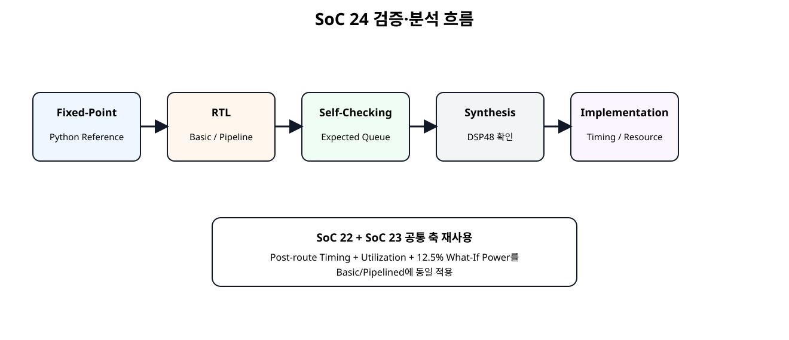
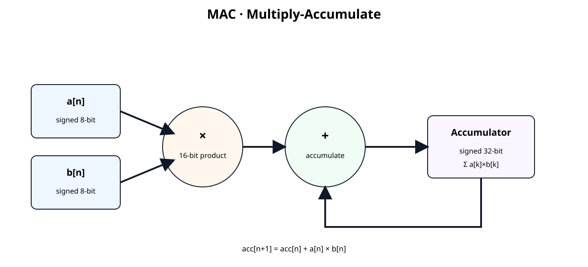
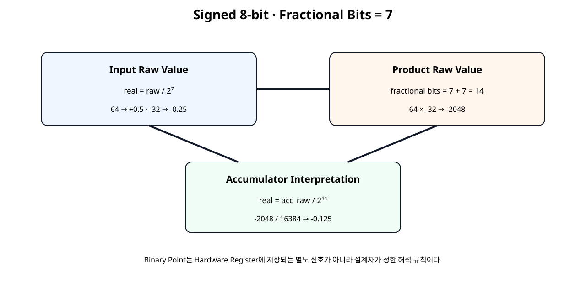
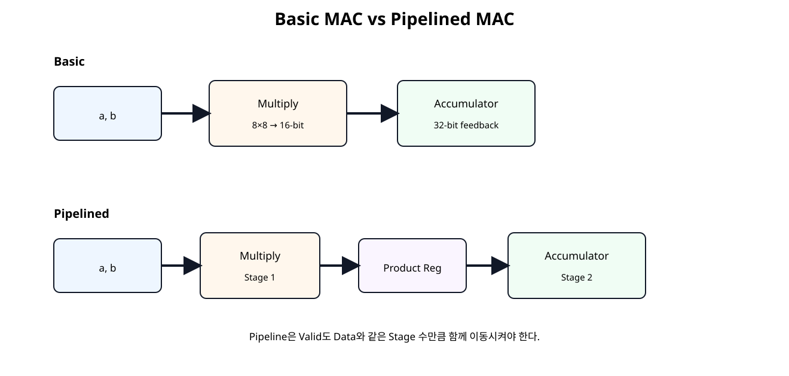
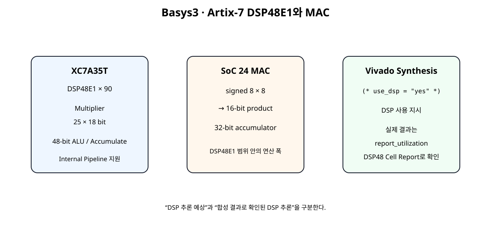

전체 학습 위치
이번 장의 목표

원본 보기 ↗
MAC이 NPU에서 중요한 이유
Neural Network의 Dense Layer와 Convolution은 결국 많은 곱셈과 덧셈의 반복으로 표현된다. Hardware에서는 이 반복을 MAC 단위로 만들고 여러 MAC을 병렬화하여 Throughput을 높인다.
MAC 기본 수식

원본 보기 ↗
Signed 8-bit 입력
a_i, b_i는 Verilog signed [7:0]으로 선언한다. Raw 정수 범위는 -128~127이다.
양자화 NPU에서 int8을 많이 사용하는 이유를 앞으로 다루지만, 이번 장에서는 먼저 signed arithmetic과 Bit Width에 집중한다.
Fixed-Point 해석

원본 보기 ↗
Q 표기 관습 차이를 피하기 위해 signed 8 bit + fractional bits 7이라고 직접 정의한다.
Binary Point는 어디에 있는가
Hardware Register에 “소수점 위치”를 저장하는 별도 Bit가 있는 것이 아니다. 같은 8'b01000000도 정수로 읽으면 64이고 Fractional Bits를 7로 정하면 0.5로 해석한다.
곱셈 결과 폭
Vivado Synthesis는 Multiplier 결과 폭을 두 Operand Width의 합으로 설명한다. 따라서 8-bit × 8-bit의 전체 결과는 16-bit가 필요하다.
Accumulator 폭
16-bit Product를 여러 번 더하면 Product Width만으로는 쉽게 Overflow한다. 이번 장에서는 32-bit Accumulator를 사용하고 16-bit Product를 Sign Extension하여 더한다.
product_ext_w =
{{16{product_w[15]}}, product_w};Basic MAC
valid_i=1인 Clock에서 Product를 현재 Accumulator에 더한다. clear_i는 누산 시작점을 다시 0으로 만든다.
Basic MAC RTL
(* use_dsp = "yes" *)
module mac_s8_acc32_basic (
input wire clk,
input wire resetn,
input wire clear_i,
input wire valid_i,
input wire signed [7:0] a_i,
input wire signed [7:0] b_i,
output reg signed [31:0] acc_o,
output reg valid_o
);
// Fixed-point interpretation used in this chapter:
// - a_i, b_i: signed 8-bit values with FRAC_BITS = 7
// - real value = raw signed integer / 2^7
// - product: 16-bit signed raw value with 14 fractional bits
// - accumulator keeps the same 14 fractional bits
//
// No rounding/truncation is needed before accumulation because the full
// 16-bit product is sign-extended into the 32-bit accumulator.
wire signed [15:0] product_w;
wire signed [31:0] product_ext_w;
assign product_w =
$signed(a_i) * $signed(b_i);
assign product_ext_w =
{{16{product_w[15]}}, product_w};
always @(posedge clk) begin
if (!resetn) begin
acc_o <= 32'sd0;
valid_o <= 1'b0;
end else if (clear_i) begin
acc_o <= 32'sd0;
valid_o <= 1'b0;
end else begin
valid_o <= valid_i;
if (valid_i) begin
acc_o <= acc_o + product_ext_w;
end
end
end
endmodule
Pipeline이 필요한 이유
연산 규모와 Clock 요구가 커지면 Multiply와 Accumulate를 한 Timing Stage에 모두 넣는 것보다 중간 Register를 두어 Data Path를 분할하는 것이 Timing Closure에 유리할 수 있다.
Pipelined MAC

원본 보기 ↗
Valid Pipeline
Data만 Pipeline하고 Valid를 같이 지연시키지 않으면 결과와 유효 신호가 어긋난다.
Pipelined MAC RTL
(* use_dsp = "yes" *)
module mac_s8_acc32_pipelined (
input wire clk,
input wire resetn,
input wire clear_i,
input wire valid_i,
input wire signed [7:0] a_i,
input wire signed [7:0] b_i,
output reg signed [31:0] acc_o,
output reg valid_o
);
// Pipeline structure:
// Stage 1: signed multiply and product register
// Stage 2: sign extension + accumulation
//
// The binary point does not move during accumulation.
// a/b use 7 fractional bits, so product/accumulator use 14 fractional bits.
wire signed [15:0] product_w;
reg signed [15:0] product_q;
reg product_valid_q;
wire signed [31:0] product_ext_w;
assign product_w =
$signed(a_i) * $signed(b_i);
assign product_ext_w =
{{16{product_q[15]}}, product_q};
always @(posedge clk) begin
if (!resetn) begin
product_q <= 16'sd0;
product_valid_q <= 1'b0;
acc_o <= 32'sd0;
valid_o <= 1'b0;
end else if (clear_i) begin
product_q <= 16'sd0;
product_valid_q <= 1'b0;
acc_o <= 32'sd0;
valid_o <= 1'b0;
end else begin
// Stage 1
product_valid_q <= valid_i;
if (valid_i) begin
product_q <= product_w;
end
// Stage 2
valid_o <= product_valid_q;
if (product_valid_q) begin
acc_o <= acc_o + product_ext_w;
end
end
end
endmodule
DSP48E1 구조

원본 보기 ↗
7-Series DSP48E1은 25×18 Multiplier와 48-bit Arithmetic/Accumulator 구조를 제공하며 내부 Pipeline을 지원한다.
XC7A35T의 DSP 자원
Basys3의 XC7A35T에는 DSP48E1 Slice가 90개 있다. 향후 4/8/16 MAC 병렬화에서는 이 개수가 중요한 Resource Budget이 된다.
USE_DSP
(* use_dsp = "yes" *)
module mac_s8_acc32_basic (...);Vivado 2026.1은 Multiplier를 Slice Logic 또는 DSP Block으로 구현할 수 있으며 USE_DSP Attribute로 DSP Block 사용을 지시할 수 있다.
DSP 추론 확인 방법
Python Fixed-Point Reference
RTL과 독립적인 Python Reference Model을 실제 실행해 Directed Case를 검증했다.
a_raw,b_raw,a_real,b_real,product_raw,acc_raw,acc_real
64,-32,0.50000000,-0.25000000,-2048,-2048,-0.12500000
127,127,0.99218750,0.99218750,16129,14081,0.85943604
-128,127,-1.00000000,0.99218750,-16256,-2175,-0.13275146
-128,-128,-1.00000000,-1.00000000,16384,14209,0.86724854
1,-1,0.00781250,-0.00781250,-1,14208,0.86718750
0,127,0.00000000,0.99218750,0,14208,0.86718750
SOC24 PYTHON FIXED-POINT REFERENCE: PASS
Spreadsheet runtime warmup failed during python startup
Traceback (most recent call last):
File "/tmp/tmp.L2TH2Y5coc/artifact_tool_v2-2.8.22/artifact_tool/patches/warm_spreadsheet_runtime_on_startup.py", line 26, in warm_spreadsheet_runtime_on_startup
File "/tmp/tmp.L2TH2Y5coc/artifact_tool_v2-2.8.22/artifact_tool/spreadsheet_warmup.py", line 785, in warm_spreadsheet_runtime
File "/tmp/tmp.L2TH2Y5coc/artifact_tool_v2-2.8.22/artifact_tool/spreadsheet_warmup.py", line 720, in _warm_feature_flows
File "/tmp/tmp.L2TH2Y5coc/artifact_tool_v2-2.8.22/artifact_tool/spreadsheet_warmup.py", line 704, in _warm_collaboration_flows
File "/tmp/tmp.L2TH2Y5coc/artifact_tool_v2-2.8.22/artifact_tool/generated/interface/models.py", line 32317, in hydrate_crdt_from_proto
File "/tmp/tmp.L2TH2Y5coc/artifact_tool_v2-2.8.22/artifact_tool/rpc/remote.py", line 749, in __call__
File "/tmp/tmp.L2TH2Y5coc/artifact_tool_v2-2.8.22/artifact_tool/rpc/client.py", line 150, in call
artifact_tool.rpc.client.RemoteError: hydrateCrdtFromProto requires an empty collaborative document.
Self-Checking Testbench
`timescale 1ns / 1ps
module tb_mac_s8_acc32_compare;
logic clk = 1'b0;
logic resetn = 1'b0;
logic clear_i = 1'b0;
logic valid_i = 1'b0;
logic signed [7:0] a_i = 8'sd0;
logic signed [7:0] b_i = 8'sd0;
wire signed [31:0] basic_acc_o;
wire basic_valid_o;
wire signed [31:0] pipe_acc_o;
wire pipe_valid_o;
logic signed [31:0] expected_basic_q[$];
logic signed [31:0] expected_pipe_q[$];
logic signed [31:0] reference_acc;
int error_count = 0;
int check_count = 0;
always #5 clk = ~clk;
mac_s8_acc32_basic u_basic (
.clk(clk),
.resetn(resetn),
.clear_i(clear_i),
.valid_i(valid_i),
.a_i(a_i),
.b_i(b_i),
.acc_o(basic_acc_o),
.valid_o(basic_valid_o)
);
mac_s8_acc32_pipelined u_pipe (
.clk(clk),
.resetn(resetn),
.clear_i(clear_i),
.valid_i(valid_i),
.a_i(a_i),
.b_i(b_i),
.acc_o(pipe_acc_o),
.valid_o(pipe_valid_o)
);
function automatic logic signed [31:0] reference_next(
input logic signed [31:0] acc,
input logic signed [7:0] a,
input logic signed [7:0] b
);
logic signed [15:0] product;
logic signed [31:0] product_ext;
begin
product = a * b;
product_ext = {
{16{product[15]}},
product
};
reference_next = acc + product_ext;
end
endfunction
task automatic drive_valid(
input integer a_value,
input integer b_value
);
logic signed [31:0] next_acc;
begin
@(negedge clk);
clear_i = 1'b0;
valid_i = 1'b1;
a_i = a_value;
b_i = b_value;
next_acc = reference_next(
reference_acc,
a_i,
b_i
);
reference_acc = next_acc;
expected_basic_q.push_back(next_acc);
expected_pipe_q.push_back(next_acc);
end
endtask
task automatic drive_idle;
begin
@(negedge clk);
valid_i = 1'b0;
a_i = 8'sd0;
b_i = 8'sd0;
end
endtask
task automatic clear_mac;
begin
// Only call after pending expected queues are empty.
@(negedge clk);
valid_i = 1'b0;
clear_i = 1'b1;
@(negedge clk);
clear_i = 1'b0;
reference_acc = 32'sd0;
end
endtask
task automatic wait_queues_empty;
int k;
begin
drive_idle();
for (k = 0; k < 20; k++) begin
@(posedge clk);
if (
(expected_basic_q.size() == 0) &&
(expected_pipe_q.size() == 0)
) begin
return;
end
end
error_count++;
$error(
"TIMEOUT: expected queues basic=%0d pipe=%0d",
expected_basic_q.size(),
expected_pipe_q.size()
);
end
endtask
always @(posedge clk) begin
#1;
if (resetn && basic_valid_o) begin
check_count++;
if (expected_basic_q.size() == 0) begin
error_count++;
$error("BASIC: unexpected valid");
end else begin
if (basic_acc_o !== expected_basic_q[0]) begin
error_count++;
$error(
"BASIC mismatch actual=%0d expected=%0d",
basic_acc_o,
expected_basic_q[0]
);
end else begin
$display(
"PASS BASIC: acc=%0d",
basic_acc_o
);
end
expected_basic_q.pop_front();
end
end
if (resetn && pipe_valid_o) begin
check_count++;
if (expected_pipe_q.size() == 0) begin
error_count++;
$error("PIPE: unexpected valid");
end else begin
if (pipe_acc_o !== expected_pipe_q[0]) begin
error_count++;
$error(
"PIPE mismatch actual=%0d expected=%0d",
pipe_acc_o,
expected_pipe_q[0]
);
end else begin
$display(
"PASS PIPE: acc=%0d",
pipe_acc_o
);
end
expected_pipe_q.pop_front();
end
end
end
initial begin
reference_acc = 32'sd0;
repeat (5) @(posedge clk);
resetn = 1'b1;
// Directed signed/fixed-point cases.
// FRAC_BITS = 7:
// 64 -> +0.5, -32 -> -0.25.
drive_valid(64, -32); // product raw -2048 -> -0.125 real
drive_valid(127, 127); // max positive x max positive
drive_valid(-128, 127); // min negative x max positive
drive_valid(-128, -128);
drive_valid(1, -1);
drive_valid(0, 127);
wait_queues_empty();
clear_mac();
// Random signed 8-bit regression.
repeat (32) begin
drive_valid(
$signed($urandom_range(0, 255)),
$signed($urandom_range(0, 255))
);
end
wait_queues_empty();
$display("");
$display("SOC24 CHECK COUNT : %0d", check_count);
$display("SOC24 ERROR COUNT : %0d", error_count);
if (error_count == 0) begin
$display("SOC24 MAC SELF-CHECKING TEST: PASS");
end else begin
$fatal(
1,
"SOC24 MAC SELF-CHECKING TEST: FAIL (%0d errors)",
error_count
);
end
#20;
$finish;
end
endmodule
Basic과 Pipelined 구조의 Latency가 다르므로 Expected Queue를 각각 유지한다.
Directed Signed Test
| a | b | 목적 |
|---|---|---|
| 64 | -32 | 양수 × 음수 + Fixed-Point 예제 |
| 127 | 127 | 최대 양수 근처 |
| -128 | 127 | 최소 음수 × 최대 양수 |
| -128 | -128 | 최소 음수 × 최소 음수 |
| 1 | -1 | 작은 signed 값 |
| 0 | 127 | Zero Product |
Random Regression
Directed Test 이후 signed 8-bit 범위의 Random Input 32개를 생성해 누적 결과를 Reference Model과 비교한다.
Overflow 범위
8-bit signed Product의 최대 절대값은 입력 조합에 따라 약 16K 수준이고 32-bit Accumulator는 단일 Product보다 훨씬 넓다. 그러나 무한히 누적할 수 있는 것은 아니므로 Vector Length가 커지면 필요한 Accumulator 폭을 계산해야 한다.
Saturation과 Wrap-around
이번 MAC은 교육용 기본 구조이므로 32-bit Two's Complement Overflow 시 자연스러운 Wrap-around가 발생한다. 실제 Quantized NPU에서는 Saturation, Rounding, Requantization 정책을 별도 설계해야 하며 이후 단계에서 확장한다.
Basys3 Board 구조
Board Top은 Module 연결만 수행하고 MAC 기능은 독립 RTL에 유지한다.
Vivado 분석 Script
# SoC 24 · NPU MAC analysis
#
# Usage:
# vivado -mode batch -source scripts/run_mac_analysis.tcl \
# -tclargs basic
#
# vivado -mode batch -source scripts/run_mac_analysis.tcl \
# -tclargs pipelined
if {$argc < 1} {
puts "ERROR: usage: run_mac_analysis.tcl <basic|pipelined>"
exit 1
}
set variant [lindex $argv 0]
if {$variant eq "basic"} {
set top_name mac_basic_basys3_top
set mac_file mac_s8_acc32_basic.v
set board_file mac_basic_basys3_top.v
} elseif {$variant eq "pipelined"} {
set top_name mac_pipelined_basys3_top
set mac_file mac_s8_acc32_pipelined.v
set board_file mac_pipelined_basys3_top.v
} else {
puts "ERROR: unknown variant '$variant'"
exit 1
}
set script_dir [file dirname [file normalize [info script]]]
set root_dir [file normalize [file join $script_dir ".."]]
set rtl_dir [file join $root_dir "rtl"]
set xdc_dir [file join $root_dir "constraints"]
set out_dir [file normalize [file join $root_dir "reports" $variant]]
file mkdir $out_dir
create_project -in_memory -part xc7a35tcpg236-1
read_verilog [file join $rtl_dir "reset_active_high_to_active_low.v"]
read_verilog [file join $rtl_dir "mac_pattern_source.v"]
read_verilog [file join $rtl_dir "mac_result_sink.v"]
read_verilog [file join $rtl_dir $mac_file]
read_verilog [file join $rtl_dir $board_file]
synth_design \
-top $top_name \
-part xc7a35tcpg236-1
read_xdc [file join $xdc_dir "basys3_mac_lab.xdc"]
create_clock \
-name sys_clk \
-period 10.000 \
[get_ports clk]
# Confirm what synthesis actually inferred.
report_utilization \
-hierarchical \
-file [file join $out_dir "01_utilization_post_synth.rpt"]
redirect -file [file join $out_dir "02_dsp48_cells_post_synth.rpt"] {
set dsp_cells [get_cells -hier -filter {REF_NAME =~ DSP48*}]
puts "DSP48 cell count: [llength $dsp_cells]"
foreach cell $dsp_cells {
puts $cell
}
}
report_timing_summary \
-delay_type min_max \
-report_unconstrained \
-max_paths 10 \
-file [file join $out_dir "03_timing_summary_post_synth.rpt"]
opt_design
place_design
phys_opt_design
route_design
report_utilization \
-hierarchical \
-file [file join $out_dir "04_utilization_post_route.rpt"]
report_timing_summary \
-delay_type min_max \
-report_unconstrained \
-max_paths 20 \
-file [file join $out_dir "05_timing_summary_post_route.rpt"]
report_timing \
-delay_type max \
-max_paths 20 \
-nworst 1 \
-sort_by group \
-input_pins \
-file [file join $out_dir "06_worst_setup_paths.rpt"]
# Same What-If activity assumption used in SoC 23.
set_switching_activity \
-default_static_probability 0.5 \
-default_toggle_rate 12.5
report_power \
-file [file join $out_dir "07_power_normalized_activity.rpt"] \
-rpx [file join $out_dir "07_power_normalized_activity.rpx"]
report_methodology \
-file [file join $out_dir "08_methodology_post_route.rpt"]
write_checkpoint -force \
[file join $out_dir "${variant}_mac_post_route.dcp"]
puts ""
puts "SoC 24 MAC analysis complete."
puts "Variant : $variant"
puts "Reports : $out_dir"
puts ""
puts "Check DSP inference in:"
puts " 01_utilization_post_synth.rpt"
puts " 02_dsp48_cells_post_synth.rpt"
puts ""
puts "Do not claim DSP inference until these reports are generated."
Basic/Pipelined 각각에 대해 Synthesis DSP 확인, Post-route Timing, Utilization, 동일 12.5% What-If Power Report를 생성한다.
Timing 비교
SoC 22와 동일하게 05_timing_summary_post_route.rpt의 WNS/TNS/WHS/THS를 기준으로 Basic과 Pipelined 구조를 비교한다.
Pipeline이 추가됐다고 반드시 더 높은 Fmax가 나온다고 미리 확정하지 않고 실제 Critical Path를 확인한다.
Resource 비교
01_utilization_post_synth.rpt와 04_utilization_post_route.rpt에서 DSP, LUT, FF를 확인한다. Pipelined 구조는 Product Register/Valid Register 때문에 Register Resource가 증가할 수 있다.
Power 비교
SoC 23과 동일한 Activity 가정으로 07_power_normalized_activity.rpt를 만든다. Pipeline은 Clocked Register가 늘지만 Route/Glitch가 바뀌므로 Dynamic Power 방향은 Report로 확인한다.
MAC 하나에서 PE로
MAC 하나는 하나의 Weight×Activation Pair를 처리한다. 다음 단계에서는 여러 MAC을 하나의 PE(Processing Element, 처리 요소) 안에 병렬 배치한다.
NPU Dot Product 연결
현재 MAC의 반복 누산은 Dot Product의 가장 단순한 Sequential 구현이다. 병렬 MAC 수를 늘리면 Throughput은 높아질 수 있지만 DSP Resource와 Memory Bandwidth 요구도 함께 증가한다.
오류 점검
| 증상 | 원인 | 확인 |
|---|---|---|
| 음수 곱이 이상함 | signed 선언/캐스팅 누락 | $signed() |
| Product MSB 손실 | 결과 폭 부족 | 8×8 → 16 bit |
| 누산 중 음수 값 깨짐 | Sign Extension 오류 | 16→32 bit 부호 확장 |
| Pipeline 결과가 한 칸 밀림 | Valid 지연 불일치 | product_valid_q |
| DSP가 0개 | Synthesis Mapping 차이 | USE_DSP + Utilization |
| Timing 개선 안 됨 | Critical Path가 다른 곳 | Post-route Worst Path |
| Fixed-Point 값이 128배/16384배 차이 | Binary Point 해석 오류 | Input F=7 / Product F=14 |
| 긴 Vector에서 값 Wrap | Accumulator Overflow | ACC Width / Saturation |
SoC 24 완료 체크리스트
- [ ] MAC의 Multiply + Accumulate 구조를 설명할 수 있다.
- [ ] signed 8-bit Raw 값과 Fractional Bits를 구분한다.
- [ ] 8×8 전체 Product에 16 bit가 필요한 이유를 이해한다.
- [ ] Product의 Fractional Bits가 14가 되는 이유를 이해한다.
- [ ] 16-bit Product를 32-bit로 Sign Extension한다.
- [ ] Basic MAC을 RTL로 구현한다.
- [ ] Product Register를 넣은 Pipelined MAC을 구현한다.
- [ ] Valid도 Data와 함께 Pipeline한다.
- [ ] DSP48E1의 25×18 / 48-bit 연산 범위를 이해한다.
- [ ] USE_DSP와 실제 DSP 추론 확인을 구분한다.
- [ ] Python Reference Model로 Fixed-Point 값을 검증한다.
- [ ] Self-Checking Testbench에서 서로 다른 Latency를 처리한다.
- [ ] Timing·Resource·Power를 Basic/Pipelined에 동일 조건으로 비교한다.
공식 매뉴얼 및 원본 근거
| 문서 | 확인 항목 |
|---|---|
| AMD UG901 · Multipliers · 2026.1 | Multiplier 추론과 결과 Bit Width |
| AMD UG901 · Multiply-Accumulate · 2026.1 | DSP Macro 추론과 Pipeline Register 흡수 |
| AMD UG901 · USE_DSP · 2026.1 | (* use_dsp = "yes" *) |
| AMD UG479 · 7 Series DSP48E1 | 25×18 Multiplier, 48-bit Datapath, Internal Pipeline |
| AMD DS180 · 7 Series Overview | XC7A35T DSP48E1 90개 |
| AMD UG906 · Report Utilization · 2026.1 | DSP/LUT/Register 실제 합성·구현 자원 확인 |
| AMD UG900 · Vivado Simulator · 2026.1 | SystemVerilog Self-Checking Simulation |